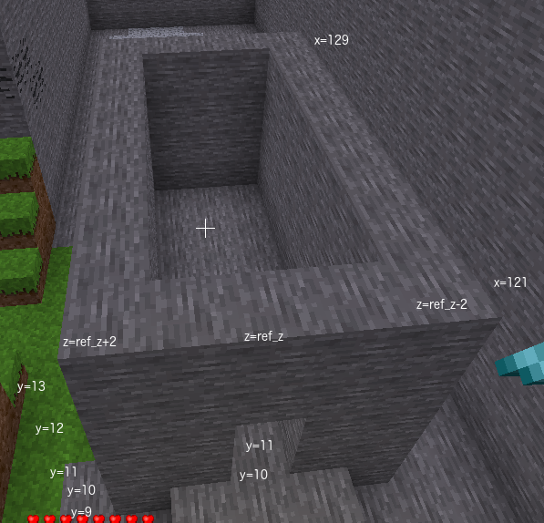

We are going to start by building the base of the castle. The base will be a room with four walls and no roof. We can build this by building a cuboid of stone and then inside that a cuboid of air. We will replace two blocks in the front wall to make a doorway.
The base section of the castle will be 5 blocks high. The length of the castle will be 9 blocks. The width of the castle will be 5 blocks.
Create a 9 x 5 x 5 open top stone box starting at x = 121, y = 9. Add a 2 x 1 doorway.
